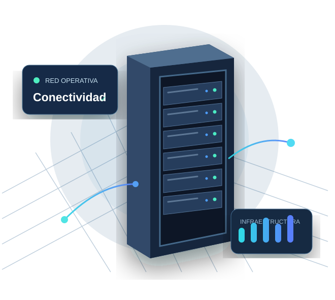

Diseño de redes
Planificación de conectividad, cableado estructurado y segmentación para entornos profesionales.
Descubrir másEquipamiento de red profesional, soluciones a medida y soporte técnico para que la tecnología impulse tu actividad.

Seleccionamos equipamiento orientado a entornos de trabajo, redes profesionales y pequeñas infraestructuras.
Desde el diseño inicial hasta el mantenimiento: acompañamos cada fase de tu infraestructura.
Planificación de conectividad, cableado estructurado y segmentación para entornos profesionales.
Descubrir másImplementación de racks, switches, servidores y puntos de acceso con criterios de orden y seguridad.
Descubrir másDiagnóstico de incidencias, revisión de equipos y mantenimiento preventivo.
Descubrir másCuéntanos qué necesitas y prepararemos una propuesta técnica orientativa.